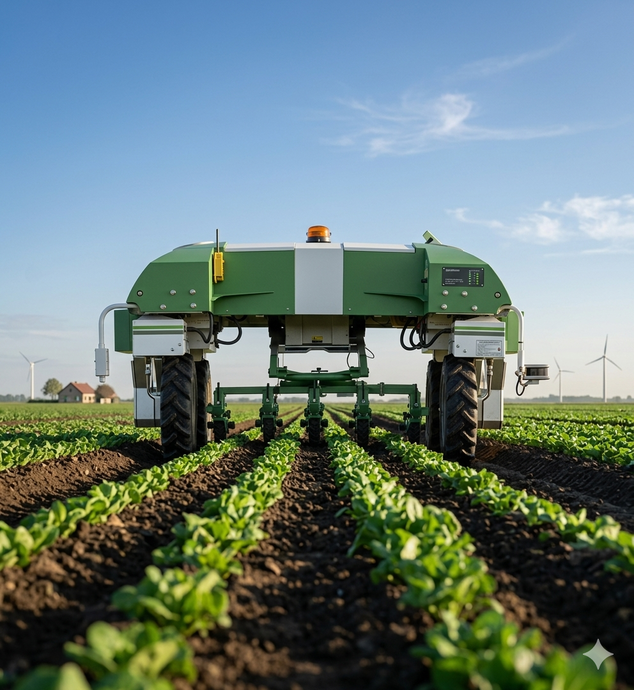
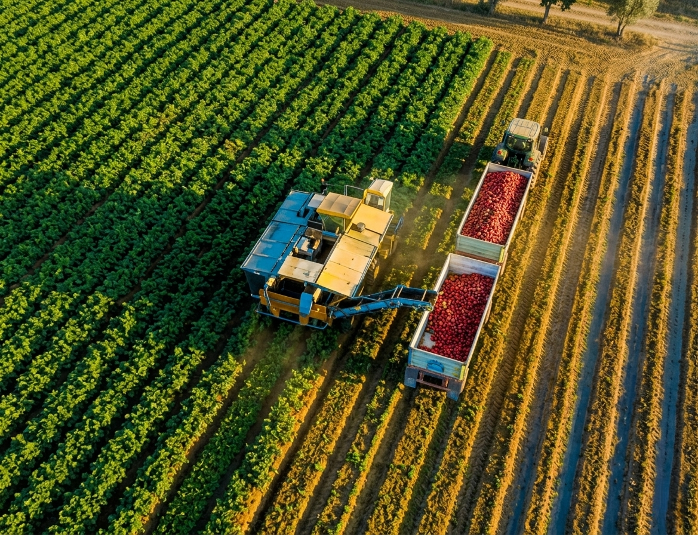
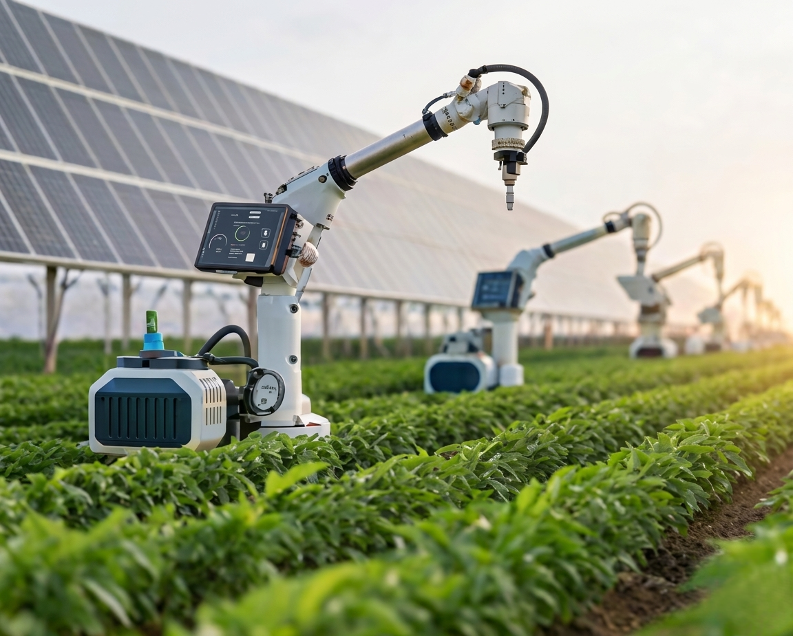
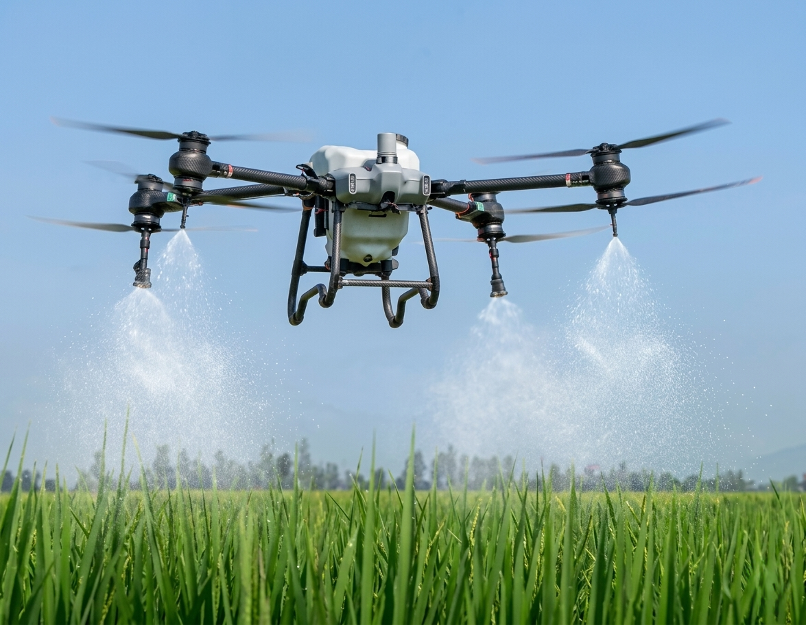
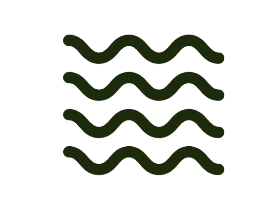
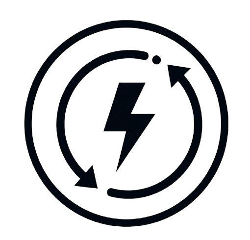
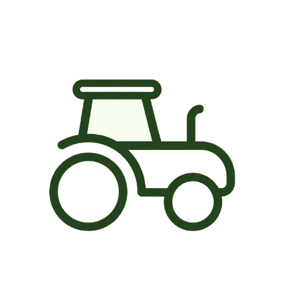

Revolutioniizing
Agriculture with
New Technology
Modern agriculture refers to the use of advanced technology, scientific research, and sustainable practices to enhance productivity, efficiency, and environmental stewardship in farming.

Our Achievements
The Relentless Efforts
And Achievements Of
Our Farmers
Modern farming refers to the use of advanced technology, sustainable practices, and innovative techniques to improve agricultural efficiency, productivity, and sustainability.
30+
Supports 120 countries since 2008
200+
Field in progess with new technique
300+
Agribusiness companies that have collaborated
$15 Billion
Invested for crop analysis, and help farmer around World
Innovative Features
Farming Solutions For Optimal Yield And Sustainability
Precision Farming Tools

Automation Solutions

Smart IrrigationSystem

Aggro Invest
Sustainable practices like no-till farming and cover cropping improve soil health and reduce carbon emissions. Enhanced breeding techniques and controlled environment.
See More Packages
Result of Using
Enhancing Agriculture With Innovative Ideas For The Future
We're all about revolutionizing modern farming with innovative, sustainable practices to make the industry more eco-friendly and future-ready.

65%
50%
Boost Crop Production with Our Aggrotech's Eco- Friendly Solutions
Decrease in Water Consumption with Aggrotech's Intelligent Irrigation.
Why Cloose Us
Benefits Gained From Using Our Aggrotech’s Solutions

Sustainability
Eco-friendly practices minimize environmental impact and promote long-term soil health.
Real-time Monitoring
Smart irrigation systems and sensor-based farming reduce water and fertilizer waste.
Improved Food Security
Higher productivity ensures a steady food supply for growing populations.
Climate Resilience
Innovations like drought-resistant crops help farmers adapt to changing weather conditions.

Smart Farming
Use of AI, IoT, and big data enables informed decision-making for better farm management.
Economic Growth
Agri-tech advancements create new job opportunities and boost rural economies.
Ready to Grow
Are You Prepared To Transform Your Farming Methods?
Join to Our Comumnity
Frequently Asked Questions
Explore common questions we frequently answer and i hope you guys can understand our mission and goal
How do i buy from a country than the UK?
Just look for a reseller in or near your city, if not, we will send your machine from our headquarters by ship